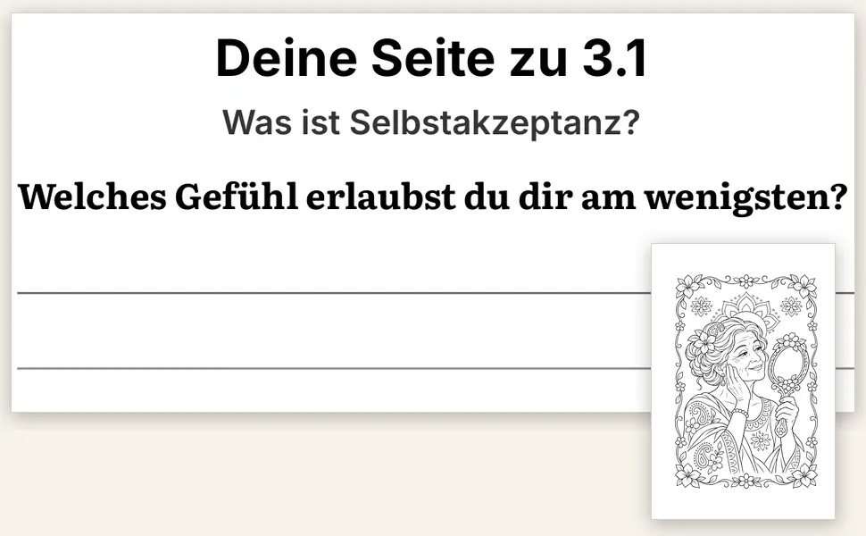

Lieben und lieben lassen
Selbstliebe als Grundlage für die Partnerschaft, mit 53 Übungen und jeweils einer Variante für Singles.
Öffnet amazon.de in einem neuen Tab.
Er sagt „Ich liebe dich“, und eine leise Stimme in dir antwortet: „Noch.“ Dann ist dieses Buch für dich.
Wer sich selbst nicht mag, kann kaum glauben, dass ein anderer ihn mag. Ein Kompliment prallt ab, eine ungelesene Nachricht wird zum Drama, und aus Angst vor Ablehnung sagst du Ja, obwohl du Nein meinst. Dieses Buch setzt bei dir an, bei dem Blick, den du auf dich selbst hast. Es geht um Selbstakzeptanz, Selbstmitgefühl, Selbstfürsorge, gesunde Grenzen, faire Streits und kleine Gesten im Alltag. Geschrieben in der Du-Form und ohne Fachchinesisch. Eine Wunderlösung ist das nicht, es braucht Übung.

Blick ins Buch: Nach jedem Abschnitt eine Arbeitsseite, zu Beginn jedes Kapitels ein Ausmalbild
Neun Kapitel führen dich vom Blick auf dich selbst bis zu den kleinen Gesten, die eine Beziehung im Alltag warm halten. Jeder Abschnitt zeigt an Beispielen aus dem Alltag, wie es oft schiefläuft und wie es besser gehen kann. Dazu gibt es eine Übung, jede auch mit einer Variante für Singles. Nach jedem Abschnitt folgt eine Arbeitsseite mit Fragen, auf der du deine Antworten direkt ins Buch schreibst. Zu Beginn jedes Kapitels wartet ein Bild zum Ausmalen. Bei Gewalt oder Kontrolle in der Beziehung nennt das Buch Stellen, die helfen. Es ist ein Ratgeber und ersetzt keine Therapie oder Paarberatung.
Lesen allein reicht nicht. Diese Übungen aus dem Buch probierst du im Alltag aus.
Die Selbstmitgefühls-Pause
In einem schwierigen Moment sagst du dir drei Sätze: Das ist gerade schwer. Andere kennen das auch. Und du fragst dich, was du gerade brauchst. Wichtig ist ein freundlicher Ton.
Dein Grenzsatz
Du formulierst eine Grenze als ruhigen Satz: was passiert, was du fühlst, was dir wichtig ist und was du dir wünschst. Dann liest du ihn laut vor und prüfst, ob ein Vorwurf darin steckt.
Eure Streitregeln
Ihr schreibt in einer ruhigen Stunde fünf Regeln für eure Streits auf, zum Beispiel beim Thema bleiben und nicht „immer“ oder „nie“ sagen.
Drei Inseln am Tag
Morgens, tagsüber und abends schenkst du deinem Partner eine kleine Geste: ein Lächeln, eine Nachricht, eine Tasse Tee. Als Single planst du die drei Inseln für dich.
Dieses Buch ist ein Ratgeber und kein Ersatz für eine Therapie oder Beratung. Wenn es dir gerade richtig schlecht geht, hol dir bitte Hilfe, zum Beispiel bei der Telefonseelsorge unter 0800 111 0 111 (kostenlos, rund um die Uhr).
Öffnet amazon.de in einem neuen Tab.
Mehr zum Thema Beziehung & Liebe
 500 Komplimente für eine liebevolle Beziehung500 Komplimente für deine Partnerin oder deinen Partner, sortiert nach zehn Themen. Aufschlagen, einen Satz aussuchen, fertig.
500 Komplimente für eine liebevolle Beziehung500 Komplimente für deine Partnerin oder deinen Partner, sortiert nach zehn Themen. Aufschlagen, einen Satz aussuchen, fertig. Kommunikation und VerständnisWie ihr besser zuhört, Wünsche klar aussprecht und fairer streitet. Klappt auch, wenn nur einer von euch liest.Tschüss TrennungsschmerzWas nach einer Trennung in dir passiert und was du selbst tun kannst, in deinem eigenen Tempo.
Kommunikation und VerständnisWie ihr besser zuhört, Wünsche klar aussprecht und fairer streitet. Klappt auch, wenn nur einer von euch liest.Tschüss TrennungsschmerzWas nach einer Trennung in dir passiert und was du selbst tun kannst, in deinem eigenen Tempo. Zwischen Alltag und uns140 Gesprächsfragen für Paare, die im Alltagstrubel wieder mehr voneinander erfahren wollen.
Zwischen Alltag und uns140 Gesprächsfragen für Paare, die im Alltagstrubel wieder mehr voneinander erfahren wollen. In 30 Tagen zu mehr Vertrauen in der BeziehungEine Übung pro Tag für Paare, die sich wieder aufeinander verlassen wollen.
In 30 Tagen zu mehr Vertrauen in der BeziehungEine Übung pro Tag für Paare, die sich wieder aufeinander verlassen wollen.